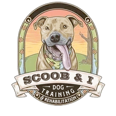
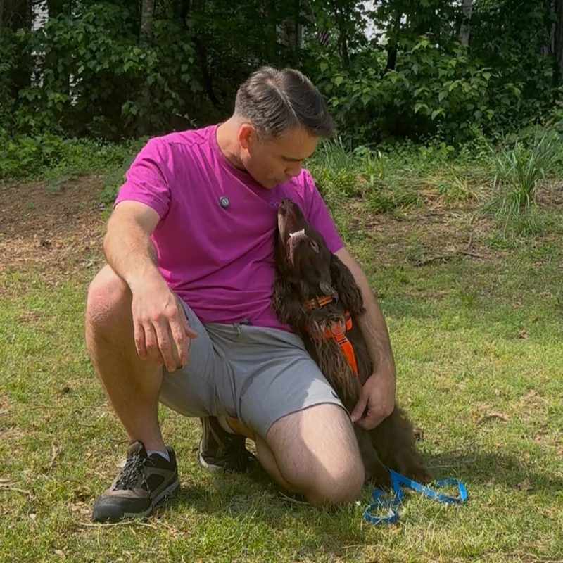
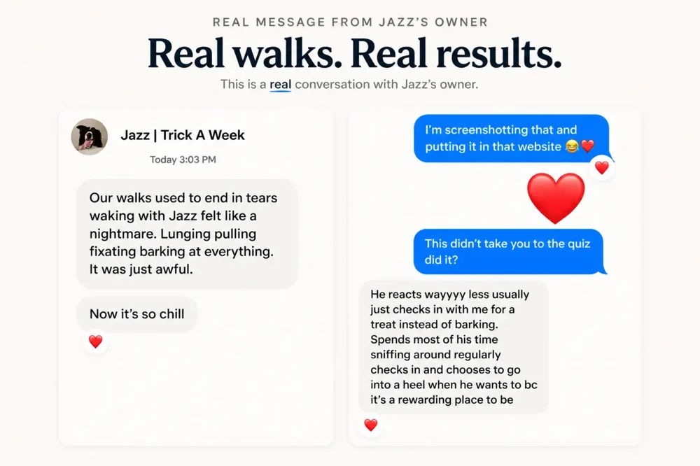

Catie on working with Joel
A client video about working together.

Talk through what’s happening with Joel and explore what kind of help fits your dog and your life.

Meet Joel Harrison
I'm Joel Harrison. I help people understand their dogs and make training useful in the life they actually live.
What do you want life with your dog to look like? That's where we start. Your goals and what works for your life come before an arbitrary list of rules or commands. The plan has to work for you and your dog.
That might mean calmer walks, easier visitors, or learning what to do when you never thought it could get this bad. I work locally in Sharpsburg, Georgia, and virtually with owners around the world.
How I workJazz's owner described lunging, pulling, fixating and barking. Later, they described more sniffing, checking in and choosing to walk together.
Jazz's owner“Our walks used to end in tears”
“Now it’s so chill”

Enlarge originalA client video about working together.
Trying to solve the problem while it's happening, before you've built a few necessary skills, makes things too hard for you and your dog. We build those skills in situations you can both handle, then bring them into the moments that matter.
Stop rehearsing the pattern that keeps the problem alive.
Build confidence, motivation, emotional control, and connection.
Teach the skills your dog needs for the situations you face.
Bring those skills into walks, visitors, public places, and real life.
Come watch me work with dogs on TikTok Live. See the practice, the decisions and the explanations as they happen.
Tell me about the dog you live with and the life you want together.